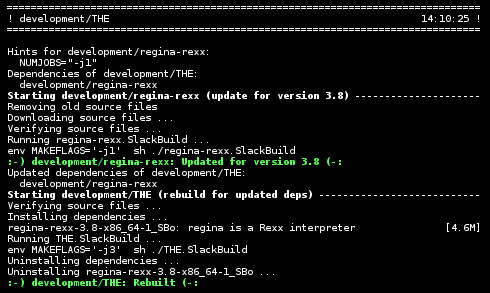

Dependencies
Dependencies are built, installed and removed automatically, according to the
contents of .info files (REQUIRES="...") and
Hintfiles (ADDREQUIRES="...").
If a SlackBuild does not have a corresponding .info file or hintfile, dependencies cannot
be processed.
Except when --install is specified, building, installing and removing is done as a 'tree' of dependencies, not a linear 'queue', so dependencies may be installed and removed multiple times as necessary. This produces clean packages that can be redistributed.
When an existing package in the repository is older than its dependencies, it may need to be rebuilt. To cause a rebuild, the dependencies must have been significantly updated: see Updates below for details.
Remember that dependencies on standard Slackware packages are not listed in .info files and hintfiles, and not tracked by slackrepo.
git
If no SlackBuild repository exists when slackrepo starts, it will clone the SlackBuilds.org git repository, and a local branch 14.1 will be created that tracks origin/14.1 (i.e., the stable branch at SlackBuilds.org).
Otherwise, slackrepo simply uses the git branch and revision that is currently checked out. If an item's SlackBuild directory is dirty, a warning is logged.
As a special case, if the local branch is named 14.1 (as above) and is clean, then when slackrepo starts, it will automatically fast forward the local branch from upstream (if possible), but only if more than one day has elapsed since the last automatic fast forward.
Updates
The build and rebuild commands will always update or rebuild packages if necessary. For example, if a package is being built, its dependencies will be updated and/or rebuilt if they are out-of-date. The update command proactively looks for packages that are out-of-date, and removes packages for which the SlackBuilds no longer exist.
A package is out-of-date if:
- the git revision in the directory containing the SlackBuild has changed since the package was built
- or the directory containing the SlackBuilds has untracked/uncommited files (i.e., git is "dirty") and they are newer than the package
- or its hintfile has changed since the package was built
- or any of its direct dependencies has been updated since the package was built
- or the version of Slackware has changed since the package was built
Changes in the SlackBuilds directory are classified as 'updates', which will cause directly depending items to be rebuilt if/when they are processed. Other changes are classified as 'rebuilds' and do not cause depending items to be rebuilt.
For example, ffmpeg depends on x264, and transcode depends on ffmpeg. If x264 is updated, ffmpeg will be rebuilt, but transcode will not be rebuilt. If x264 is rebuilt, ffmpeg will not be rebuilt. If ffmpeg is updated, transcode will be rebuilt.
Changes in the SlackBuilds directory that affect only the slack-desc file, README file, and .info file (except for VERSION=) are ignored.
If a package is rebuilt, or if a package is updated but its version number is unchanged, then the package's BUILD number is always incremented, overriding the BUILD number in the SlackBuild file.
gen_repos_files.sh
Optionally, Eric Hameleers'
gen_repos_files.sh
(which is included) can
be used to maintain additional package metadata in the package repository,
such as package signing and a changelog. Thanks, Eric! To use it, you will
need to set a few configuration values in the repository's configuration
file /etc/slackrepo/slackrepo_SBo.conf (but, if you use gen_repos_files.sh
already, your existing ~/.genreprc config file will be read).
Note that you will be prompted for your GPG passphrase when gen_repos_files.sh runs (after all the packages have been built). You can avoid this by using gpg-agent — see slackrepo.conf(5) for details.
slackpkg+
The repositories created by slackrepo and gen_repos_files.sh are suitable for use with Matteo Rossini's slackpkg+, which is a plugin for slackpkg that allows you to use slackpkg to manage packages from third party repositories. Thanks, Matteo!
To make your slackrepo package repository accessible outside the build host, you will need to
export it as a shared directory (e.g. NFS or a Virtualbox shared folder),
or perhaps serve it via a local webserver on the build host (e.g. by
setting PKGREPO=/var/www/htdocs/pkgrepo in /etc/slackrepo/slackrepo_SBo.conf).
For example, on a client system, to configure slackpkg+ to use a shared
directory, you can define a slackpkgplus "local mirror" with file://
(do not use dir://), and so /etc/slackpkg/slackpkgplus.conf would have something like this:
REPOPLUS=( SBo slackpkgplus restricted alienbob ) MIRRORPLUS['SBo']=file://sharedfolder/
Or to configure slackpkg+ to use a web-served repository on the build host, you would have something like this:
REPOPLUS=( SBo slackpkgplus restricted alienbob ) MIRRORPLUS['SBo']=http://buildhost/pkgrepo/
If you choose not to sign your packages with gen_repos_files.sh, you will
need to tell slackpkg+ not to check GPG signatures. There are two ways
of doing this: (1) set CHECKGPG=off in /etc/slackpkg/slackpkg.conf, or
(2) use the slackpkg control argument -checkgpg=off.
Note that slackpkg+ will not install newly added packages from your own
package repository when you run slackpkg install-new. This command
searches for new packages ONLY in the official Slackware repository. To
install specific packages in your own repository you can use
slackpkg install <packagename...>
or to install and upgrade everything in your own repository, you can use
slackpkg add <reponame>